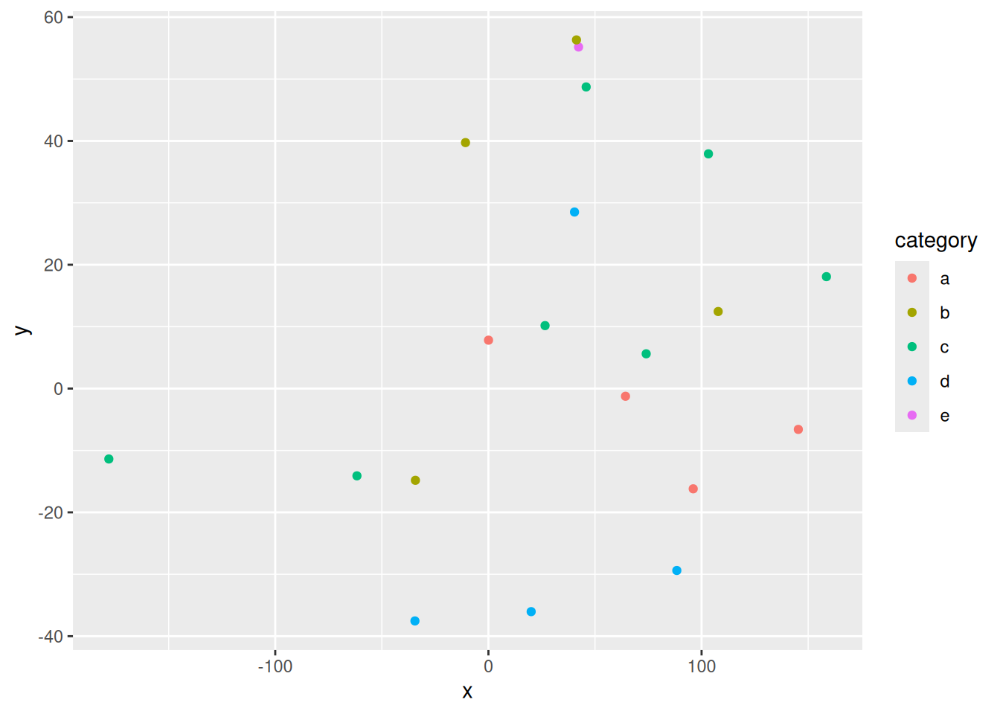

download.file(
url = "https://www.data.gouv.fr/api/1/datasets/r/98eb9dab-f328-4dee-ac08-ac17211357a8",
destfile = "data/france_election_2022_R1_communes.csv",
mode = "wb"
)My Final Project Template
Spatial Data Science Project
Introduction
[~ 200 words]
This study aims to investigate the effects of different historical developments of ideological spectrum (left/right) on the relationship between urban-rural population distribution and the general election voting.
There are noted findings in the political science literature that rural areas tend to vote for right wing parties while more urban areas for left. However, different countries present different political histories, and in particular, the development of the breadth of left-right spectrum and the voters’ loyalty to their ideologies over time.
In this project, I compare the presidential elections of France-2022 and the USA-2020. I analyze how different the relationship between urban-rural population distribution and left-right voting behavior in France and in the USA.
I hypothesize that two reasons will effect differences in this relationship: first is the stronger tradition of left-wing politics in France; and the second is the wider spectrum of left-wing ideologies. The longer history of leftism can create a closer political affiliation between the rural population and the left-wing parties. The wider spectrum of political ideologies, on the other hand, can present various opportunities for political parties to establish rapport with the rural populations. This is because in a wider political spectrum, not only the number of parties are higher, but also the substantial issue positions adopted by parties can offer a higher variety in their combinations. In a biparty system, issue positions, such as A, B, C, D, are divided into two, while in a multiparty system the issue positions are not only divided into more sections, but also they are adopted by parties with overlaps such as Party-X can adopt A and B while Party-y can adopt B and D. Since France has a multi-party system, multiple parties can address the interests of the rural voters in different ways, preventing the concentration of vote.
Materials and methods
[~ 200 words]
Data
French presidential elections in 2022
https://www.data.gouv.fr/datasets/election-presidentielle-des-10-et-24-avril-2022-resul- tats-definitifs-du-1er-tour/
French urban-rural population (last update 2020)
https://www.insee.fr/fr/information/4802589
download.file(
url = "https://www.insee.fr/fr/statistiques/fichier/4802589/UU2020_au_01-01-2025.zip",
destfile = "data/france_UU2020_commune.zip",
mode = "wb"
)US presidential elections in 2020*
https:// dataverse.harvard.edu/dataset.xhtml?persistentId=doi%3A10.7910%2FDVN%2FVOQCHQ&
data_US_elec <- readr::read_csv("data/countypres_2000-2024.csv")*I haven’t accomplish setting a download link for this set of data yet. American urban-rural population (last update 2023)
https:// www.ers.usda.gov/data-products/rural-urban-continuum-codes
download.file(
url = "https://ers.usda.gov/sites/default/files/_laserfiche/DataFiles/53251/Ruralurbancontinuumcodes2023.csv?v=36152",
destfile = "data/us_rucc_2023.csv",
mode = "wb"
)The Code
install.packages("sf")The following package(s) will be installed:
- sf [1.0-21]
These packages will be installed into "~/work/Final_Proj/Final_Proj/renv/library/linux-ubuntu-noble/R-4.5/x86_64-pc-linux-gnu".
# Installing packages --------------------------------------------------------
- Installing sf ... OK [linked from cache]
Successfully installed 1 package in 6.7 milliseconds.install.packages("dplyr")The following package(s) will be installed:
- dplyr [1.1.4]
These packages will be installed into "~/work/Final_Proj/Final_Proj/renv/library/linux-ubuntu-noble/R-4.5/x86_64-pc-linux-gnu".
# Installing packages --------------------------------------------------------
- Installing dplyr ... OK [linked from cache]
Successfully installed 1 package in 5.8 milliseconds.install.packages("readr")The following package(s) will be installed:
- readr [2.1.5]
These packages will be installed into "~/work/Final_Proj/Final_Proj/renv/library/linux-ubuntu-noble/R-4.5/x86_64-pc-linux-gnu".
# Installing packages --------------------------------------------------------
- Installing readr ... OK [linked from cache]
Successfully installed 1 package in 5.9 milliseconds.install.packages("ggplot2")The following package(s) will be installed:
- ggplot2 [4.0.0]
- gtable [0.3.6]
- scales [1.4.0]
These packages will be installed into "~/work/Final_Proj/Final_Proj/renv/library/linux-ubuntu-noble/R-4.5/x86_64-pc-linux-gnu".
# Installing packages --------------------------------------------------------
- Installing gtable ... OK [linked from cache]
- Installing scales ... OK [linked from cache]
- Installing ggplot2 ... OK [linked from cache]
Successfully installed 3 packages in 14 milliseconds.install.packages("tigris")The following package(s) will be installed:
- tigris [2.2.1]
These packages will be installed into "~/work/Final_Proj/Final_Proj/renv/library/linux-ubuntu-noble/R-4.5/x86_64-pc-linux-gnu".
# Installing packages --------------------------------------------------------
- Installing tigris ... OK [linked from cache]
Successfully installed 1 package in 5.9 milliseconds.install.packages("classInt")The following package(s) will be installed:
- classInt [0.4-11]
These packages will be installed into "~/work/Final_Proj/Final_Proj/renv/library/linux-ubuntu-noble/R-4.5/x86_64-pc-linux-gnu".
# Installing packages --------------------------------------------------------
- Installing classInt ... OK [linked from cache]
Successfully installed 1 package in 6.2 milliseconds.install.packages("scales")The following package(s) will be installed:
- scales [1.4.0]
These packages will be installed into "~/work/Final_Proj/Final_Proj/renv/library/linux-ubuntu-noble/R-4.5/x86_64-pc-linux-gnu".
# Installing packages --------------------------------------------------------
- Installing scales ... OK [linked from cache]
Successfully installed 1 package in 5.8 milliseconds.install.packages("janitor")The following package(s) will be installed:
- janitor [2.2.1]
These packages will be installed into "~/work/Final_Proj/Final_Proj/renv/library/linux-ubuntu-noble/R-4.5/x86_64-pc-linux-gnu".
# Installing packages --------------------------------------------------------
- Installing janitor ... OK [linked from cache]
Successfully installed 1 package in 6 milliseconds.install.packages("stringr")The following package(s) will be installed:
- stringr [1.6.0]
These packages will be installed into "~/work/Final_Proj/Final_Proj/renv/library/linux-ubuntu-noble/R-4.5/x86_64-pc-linux-gnu".
# Installing packages --------------------------------------------------------
- Installing stringr ... OK [linked from cache]
Successfully installed 1 package in 6.5 milliseconds.install.packages("units")The following package(s) will be installed:
- units [1.0-0]
These packages will be installed into "~/work/Final_Proj/Final_Proj/renv/library/linux-ubuntu-noble/R-4.5/x86_64-pc-linux-gnu".
# Installing packages --------------------------------------------------------
- Installing units ... OK [linked from cache]
Successfully installed 1 package in 5.9 milliseconds.Narrative: Clear narrative description of the data sources and methods. Includes data from at least two sources that were integrated / merged in R.
Code: The code associated with the project is well organized and easy to follow. Demonstrates mastery of R graphics and functions.
Data: The underlying data are publicly accessible via the web and downloaded/accessed within the Rmd script. If you want to use your own data, you must make it available on a website (e.g. Figshare) so that others are able to re-run your code.
You can do bullets like this:
- The first most important thing
- The second most important thing
- The third most important thing
You can do numbers like this:
- The first most important thing
- The second most important thing
- The third most important thing
See http://rmarkdown.rstudio.com/ for all the amazing things you can do.
Here’s my first code chunk.
x=3+4Refer to output in your narrative like this: x=7 .
Load any required packages in a code chunk (you may need to install some packages):
library(tidyverse)
library(leaflet)
library(kableExtra)
library(htmlwidgets)
library(widgetframe)
knitr::opts_chunk$set(widgetframe_widgets_dir = 'widgets' )
knitr::opts_chunk$set(cache=TRUE) # cache the results for quick compilingDownload and clean all required data
n=20
data=data.frame(x=runif(n,-180,180),
y=runif(n,-60,60),
size = runif(n, 5, 20),
category = factor(
sample(letters[1:5], n, replace = TRUE)
),
value = rnorm(n))data %>%
slice(1:10) %>% #show only 1:n rows
kable(digits=2,align="c")%>% #make table and round to two digits
kable_styling(bootstrap_options =
c("striped", "hover", "condensed", "responsive")) #apply other formatting| x | y | size | category | value |
|---|---|---|---|---|
| 96.07 | -16.20 | 5.50 | a | 0.69 |
| 20.06 | -36.04 | 5.17 | d | 0.23 |
| -34.47 | -37.54 | 14.40 | d | 1.33 |
| 88.39 | -29.39 | 19.36 | d | 0.69 |
| 74.02 | 5.61 | 15.00 | c | 0.86 |
| 26.57 | 10.17 | 9.78 | c | 0.58 |
| 107.79 | 12.45 | 15.00 | b | 0.31 |
| -61.68 | -14.10 | 7.38 | c | -0.19 |
| -10.75 | 39.73 | 19.01 | b | 0.42 |
| 145.39 | -6.60 | 19.04 | a | 1.71 |
Add any additional processing steps here.
Results
[~200 words]
Tables and figures (maps and other graphics) are carefully planned to convey the results of your analysis. Intense exploration and evidence of many trials and failures. The author looked at the data in many different ways before coming to the final presentation of the data.
Show tables, plots, etc. and describe them.
m <- leaflet(data) %>%
addTiles() %>%
addCircleMarkers(~x, ~y, radius = ~size,color = ~as.factor(category)) %>%
addPopups(~x[2], ~y[2], "Random popup")
m # a map with the default OSM tile layerMap of completely random data
data %>%
ggplot(aes(x=x,y=y,col=category))+
geom_point()
Dygraphs Example
library(dygraphs)
dygraph(nhtemp, main = "New Haven Temperatures") |>
dyRangeSelector(dateWindow = c("1920-01-01", "1960-01-01")) Conclusions
[~200 words]
Clear summary adequately describing the results and putting them in context. Discussion of further questions and ways to continue investigation.
References
All sources are cited in a consistent manner